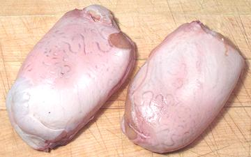

Bull Testicles -&-
Rocky Mountain Oysters

[Beef Fries, Bull Balls, Swinging Beef]
In Spain the balls of a fighting bull killed in the ring are most prized, but
here in California we have to settle for just any old bull. The photo
specimens averaged about 7 ounces each. The one to the left was 5-1/2 inches
long and 3 inches wide. I presume these are harvested at puberty, after
which bulls become ill tempered and difficult to handle.
Rocky Mountain Oysters are properly the balls of a male calf.
These are cut off at branding time. Presumably having someone's initials
burned into their hides with a red hot poker distracts the calves from
this procedure. With balls removed the calves grow up to be large,
tractable steers rather than dangerous, ill tempered bulls. Unlike the
photo specimens, RM oysters are about the size of a walnut.
More on Beef Innards
Buying:
Here in California bull balls are found in
the meat section of markets serving Mexican, South American and Southeast
European communities, and we have plenty of all of those. They are packed
on foam trays weighing 3/4 to 1-1/2 pounds depending on size and whether
the tray holds 2 or three balls. They are not cheap, running US $4.99 /
pound where I shop, more elsewhere.
Rocky Mountain Oysters are a special order item around here, and I
understand they are getting a bit scarce in Montana too, due to the
current practice of just snapping a strong rubber band around the sack
to cut off circulation and waiting for them to die and fall off.
Prep:
Here in Los Angeles, commercial bull balls have
been cut on one side and soaked to pre-prep. The only prep needed is to
wash them and peel off the outer membrane. This is not so easy and
requires patience. The membrane is very tough, adheres fairly well, and
the testicle is very tender - and you can hear the bull screaming in
heaven the whole time. If you have purchased balls or oysters frozen,
they are easy to peel if you do it just as they start to thaw.
If your balls come fresh off the bull, or you have purchased balls or
oysters that haven't been factory prepped, you should soak them in milk,
beer or salted water (varies with recipe) for about 2 hours after
peeling.
Cooking:
Bull balls and oysters are almost always
pre-cooked (about 10 minutes in court bouillon made the same as for
fish, 6 minutes for oysters), sliced, battered and fried. Pre-cooking
firms the balls up making them very easy to slice neatly. Bull Balls
are often pan fried in 1/8 inch of olive oil (pure or pomace, not
virgin) but the smaller oyster slices are most often deep fried.
Yield:
The outer membrane is substantial. 14 ounces of
bull balls yielded 10-1/4 ounces edible (73%).
ab_ballz 101009 - www.clovegarden.com
©Andrew Grygus - agryg@clovegarden.com - Photos
on this page not otherwise credited © cg1
- Linking to and non-commercial use of this page permitted